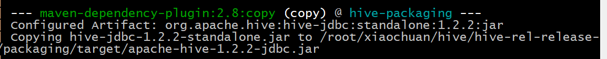
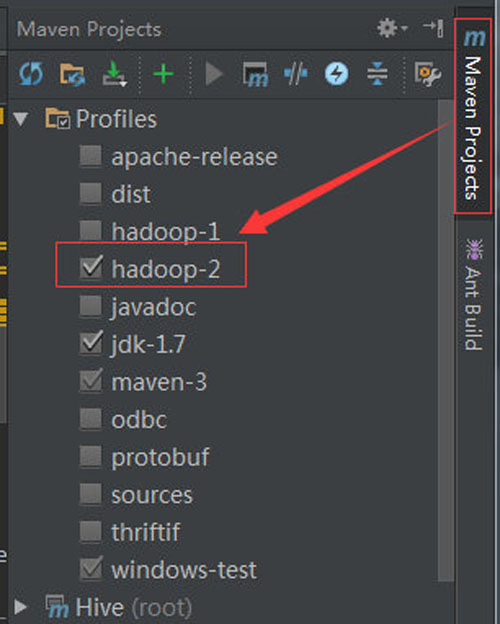

Hive源码编译及阅读修改调试
下载编译
在git上下载合适的master分支，使用maven编译。执行编译的目的在于，确保过程中生成的代码(Thrift)已经生成，这样导入IDEA就不会出现有些类找不到的情况。
执行源码编译分发命令，进入源码根目录执行：
mvn clean package -Phadoop-2 -DskipTests -Pdist
这里必须指定profile为hadoop-2来支持hadoop 2.x版本
1、后续更改完源码后，还需执行该命令来编译打包。源码更改后需评价其对Hive各模块的影响(改动代码多的话可通过pom的依赖来看)，如果影响的模块非常少，可以直接进入相应的模块进行上述命令的编译打包，如果影响模块很多，则直接在Hive源码根目录进行编译打包。
2、打完包后，将受影响的包进行线上替换，重启受影响的组件即可应用上改后的代码。如果在CDH环境，要注意所有YARN的节点都需进行包的替换，因为Hive的MR任务启动后，节点上Container的启动其核心包是加载的本地jar包，而不是HDFS上的jar包。
导入IDEA进行源码阅读修改
在Intellij里打开编译后的工程，它是一个Maven工程，软件会自动区分模块并导入。导入后可以看到源码，但我们会发现，很多关于hadoop的地方标红了，表示不可用，这是为什么呢?
这是因为版本依赖的原因，hive可编译为依赖 hadoop1 或 hadoop2，在编译源码的时候就已提示过让我们输入支持哪个，否则不能编译!
这里也一样，需要我们选择其依赖，才能正确的导入maven依赖包!
在Intellij的右侧，有个maven project的停靠栏，点击它可以看到有个 profiles的子项，我们可以明显看到hadoop-2是没有勾选的，这里勾选上它，它所指定的相应依赖就会被导入，源码就不会标红啦!就可以放心的改源码啦!
如下图

开启调试之旅
调试前提
调试代码时最好不执行完全分布式任务(会分配到多台节点机执行的MR任务)，代码跑动控制在当前JVM范围内(可以是多线程的)，否则代码跟踪超级麻烦。
如果需要执行MR任务，最好以local模式执行，打开命令SET mapreduce.framework.name=local;
有些任务也不需要起MR，这样更方便调试，尽可能不起MR：set hive.exec.mode.local.auto = true;，并调大hive.exec.mode.local.auto.tasks.max(默认4)和hive.exec.mode.local.auto.inputbytes.max(默认128M)，当且仅当自动开启本地模式设为true，并且输入的文件数量和数据量大小分别都小于这两个值的时候，才不会起MR任务。
1、Hive起完全分布式的MR任务也可追踪，但是需要修改节点机上的MR启动时Java参数，而且Hive起一个MR任务时，只有当MR启动后才能知道哪个节点机上启动了该任务，之后才能进行Remote debug连接，这在运行环境为完全分布式时会比较麻烦。但如果运行环境为伪分布式，那么追踪可能会更方便些。
2、Hive调试，实际运行环境为伪分布式集群环境或完全分布式集群环境都可以。
Hive调试需保证调试代码和运行环境的代码一致，否则调试会出现断点位置对不上的问题，影响我们调试。
如果是在Kerberos环境，运行Hive命令的用户需具备Kerberos认证，因为调试跟正常执行任务其实没什么区别。调试端(如Windows上的IDEA)不需要认证，它只要能连通开启的JVM端口即可。
调试原理
基于Sun Microsystem 的 Java Platform Debugger Architecture (JPDA) 技术，它由两个接口(分别是 JVM Tool Interface 和 JDI)、一个协议(Java Debug Wire Protocol)和两个用于合并它们的软件组件(后端和前端)组成，可以远程调试任何基于JVM的程序。
要启用调试，只需在软件的JVM启动时加载以下参数：
-Xdebug -Xrunjdwp:transport=dt_socket,address=5005,server=y,suspend=n
或
-agentlib:jdwp=transport=dt_socket,server=y,suspend=n,address=5005
参数含义：
Hive Cli 调试
在运行环境开启Hive Cli命令行，执行： bin/hive --debug -hiveconf hive.root.logger=DEBUG,console，此时界面会显示 Listening for transport dt_socket at address: 8000，表明远程调试模式已开。
然后在IntelliJ里配置远程调试模式，Run -> Debug -> Edit Configurations，然后点左上角 + 号按钮，选择 Remote，配好Host为运行Hive Cli命令的主机，Port为8000，然后起个方便识别的名字，点击Debug就可以开始调试源码了。
一旦这边远程连接上了集群环境的调试端口，集群那边就会打日志并出现hive >这样的输入光标，在IDEA里打断点，然后在Hive Cli里执行HQL语句，我们就可以看到IDEA这边的断点信息，然后逐步调试。
HiveServer2 调试
以下以CDH集群环境做说明，路径与你安装的CDH路径有关，Apache开源环境找到对应配置文件即可。
修改hiveserver2所在机器的/opt/cloudera/parcels/CDH/lib/hive/bin/hive-config.sh文件，在最后加上
export HADOOP_OPTS="$HADOOP_OPTS -agentlib:jdwp=transport=dt_socket,server=y,suspend=n,address=5005"
export HADOOP_VERSION="2.6.0-cdh5.5.1"
其中HADOOP_VERSION由命令hadoop version可得到。
改完配置后在CM里重启Hiveserver2，这时在HiveServer2所在机器上查看5005端口，会发现处于监听状态，然后利用Intellij如上面的debug一样，即可连接上远程的hiveserver2。
打好断点，之后在某一节点上启动beeline，连接上该hiveserver2，执行hql，这边就可以源码追踪。
1、注意端口别占用了，否则会报: JDWP No transports initialized, jvmtiError=AGENT_ERROR_TRANSPORT_INIT
2、如果整个Hive需要重启，需把上面更改注释掉，待Hive重启完毕后，再把注释改回来然后单独重启HiveServer2。这是因为Hive MetaStore启动时也会用到该脚本，而MetaStore先启动，会进入MetaStore的调试。之后启动HiveServer2时就会出现端口占用的情况
Beeline 调试
以下以CDH集群环境做说明，自己的安装环境寻找相应配置即可
修改需要运行beeline的机器上的beeline脚本的执行脚本，我的位置为：/opt/cloudera/parcels/CDH/lib/hive/bin/ext/beeline.sh，在脚本最后的export HADOOP_CLIENT_OPTS后加上 -Xdebug -Xrunjdwp:transport=dt_socket,server=y,suspend=n,address=5005。
如下：

改完后，在该机器上执行beeline即可进入监听状态，IDEA进行远程连接即可